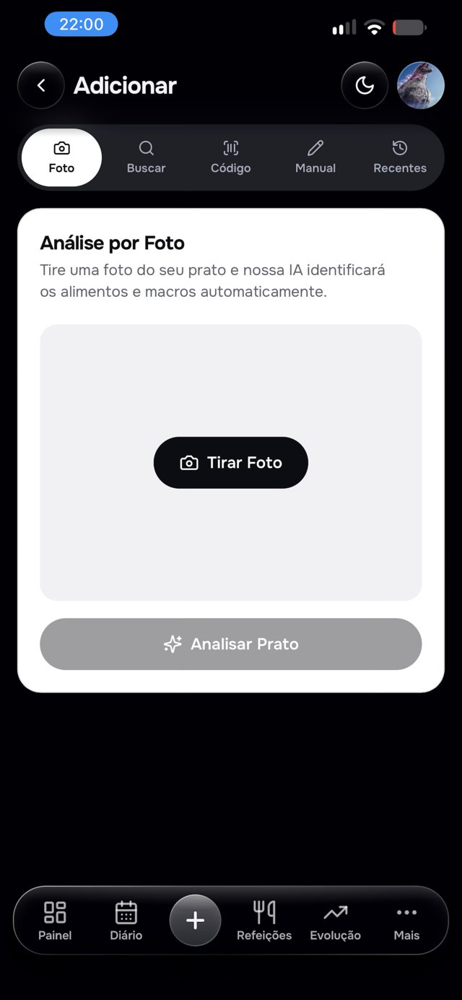
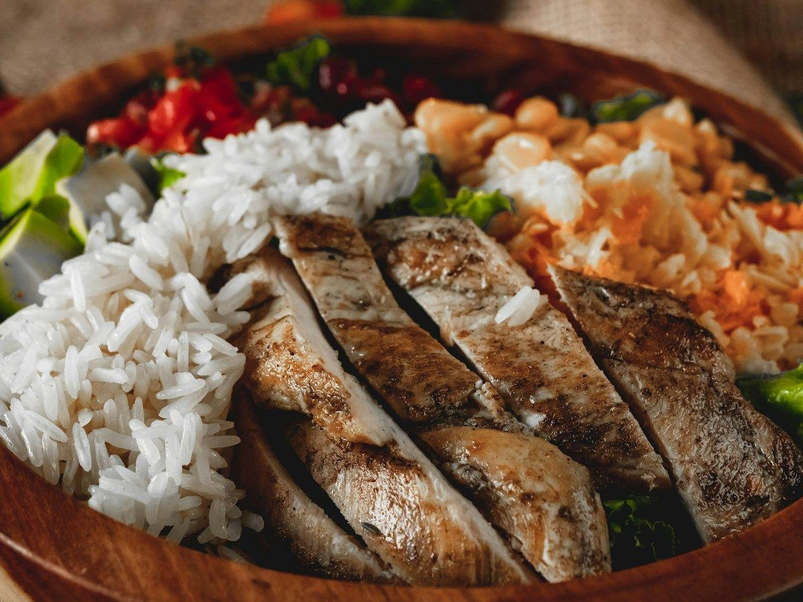
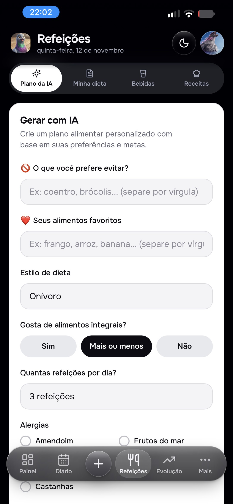
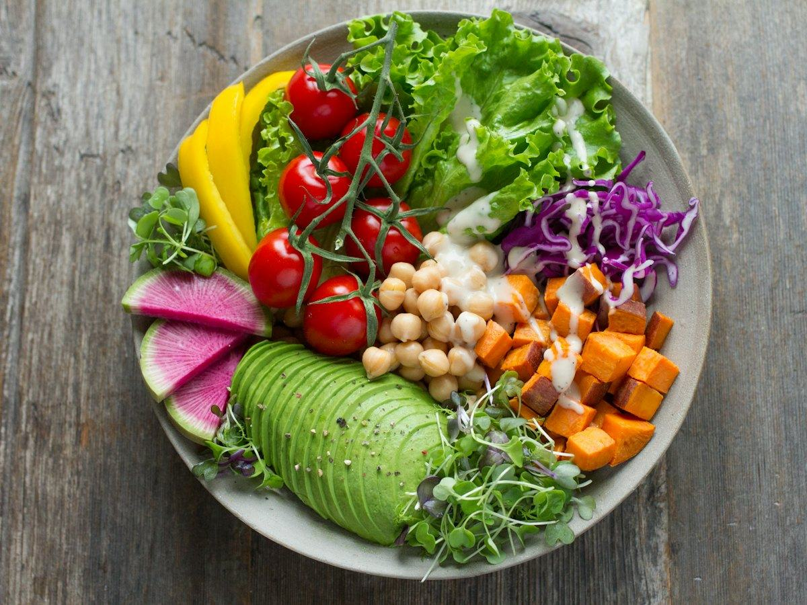
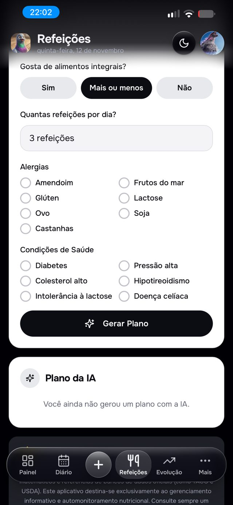
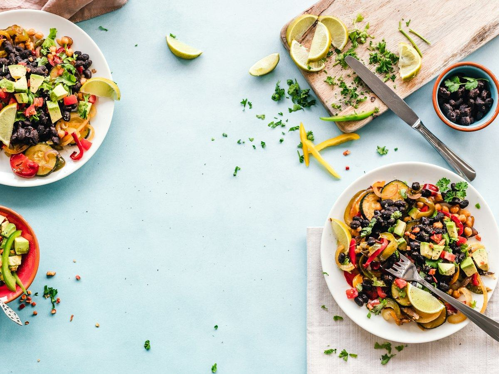
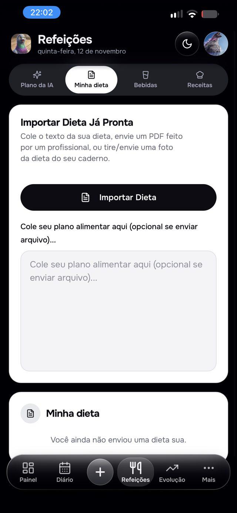
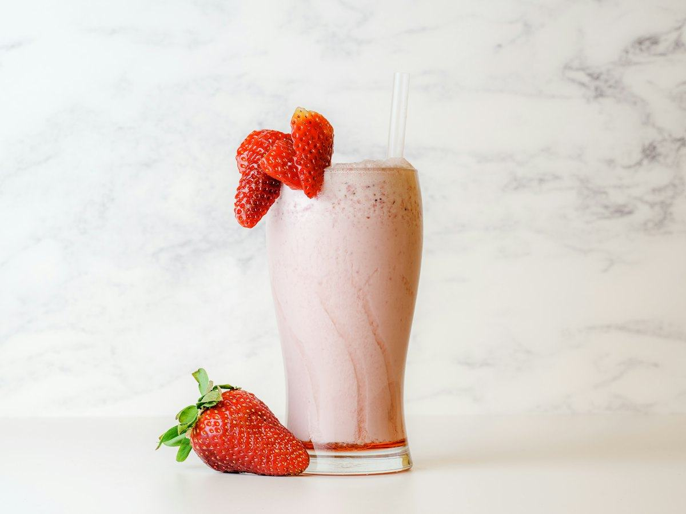
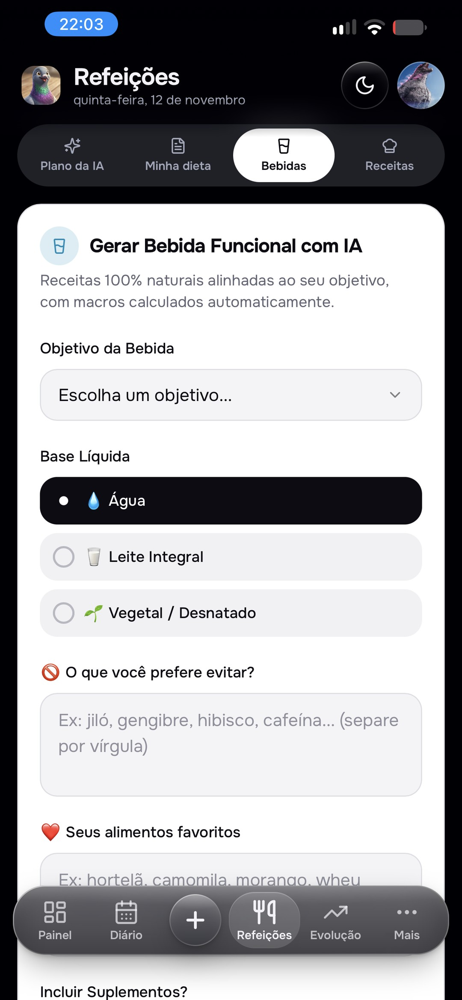
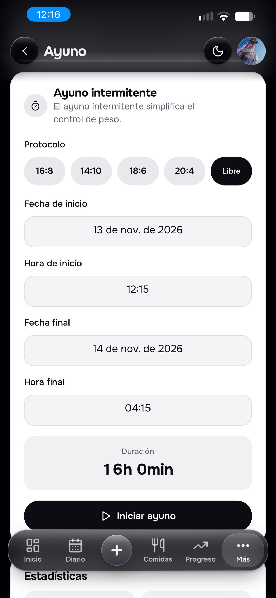

Monitore suas calorias apenas com uma foto.
Tire uma foto da sua refeição e o Pombo AI estima calorias, proteínas, carboidratos e gorduras em segundos. Sem digitar, sem pesar, sem complicação.
O que o Pombo AI inclui?

-
Acompanhe sua alimentação com apenas uma foto.
Fotografe o prato e deixe a IA separar os ingredientes e calcular as calorias e os macronutrientes para você.
-
Pesquise alimentos em um banco de dados completo.
Encontre e registre alimentos com rapidez, buscando por nome, marca ou código de barras.
-
Acompanhe seu progresso com sugestões da IA.
Veja peso, medidas e metas nutricionais, com recados personalizados para você manter o foco.
-
Registre água e exercícios todos os dias.
Controle sua hidratação e suas atividades físicas no mesmo lugar em que você acompanha a dieta.
Menu Refeições
Por que escolher o Pombo AI?
Além de contar calorias, o Pombo AI monta seu plano alimentar, importa a sua dieta, cria shakes e guarda suas receitas com macros, sempre de acordo com as suas metas.


Plano de 7 dias feito pela IA
Diga o que você evita, seus alimentos favoritos, o estilo de dieta, se gosta de integrais e quantas refeições quer por dia (de 3 a 8). A IA monta a semana a partir das metas do seu perfil.


Alergias e condições de saúde
Marque alergias como glúten, lactose ou amendoim e condições como diabetes ou pressão alta, e toque em Gerar Plano. Depois, refaça um dia, uma refeição ou troque só um alimento.


Importe a dieta que você já tem
Cole o texto, envie o PDF feito pela sua nutricionista ou tire uma foto da dieta do caderno. O app transforma tudo em um plano com calorias e macros.


Shakes e bebidas com IA
Escolha entre 24 objetivos, como proteica, pós-treino ou para dormir, a base (água, leite ou bebida vegetal) e suplementos se quiser. A receita vem com macros e modo de preparo.
Mais de 9.800 alimentos com valores de laboratório.
Busque um alimento e veja calorias, proteínas, carboidratos, gorduras e outros nutrientes por 100 g, com dados das tabelas oficiais USDA (EUA), CIQUAL (França) e TACO (Brasil). A busca funciona até sem internet. E, para produtos de mercado, é só escanear o código de barras.
- 9.881alimentos de tabelas oficiais
- 17nutrientes por alimento
- 7idiomas
Exemplo: morango cru, valores por 100 g (fonte: USDA).
Jejum intermitente
Os benefícios de jejuar com método.
O jejum intermitente alterna horas sem comer com uma janela de alimentação. Veja o que as pesquisas mostram até agora:
- Ajuda a emagrecerUma análise de 99 estudos publicada no The BMJ mostrou perda de peso com o jejum em comparação com comer sem restrição, em resultados parecidos aos de reduzir calorias.
- Pode melhorar a saúde metabólicaEstudos citados pela OCU apontam menor resistência à insulina, glicose mais baixa e redução da gordura abdominal, do colesterol LDL e dos triglicerídeos.
- Pode preservar mais músculoAlgumas pesquisas sugerem que se perde menos massa muscular do que em dietas com corte contínuo de calorias.
- Uma rotina mais simplesCom horário certo para comer, fica mais fácil planejar as refeições e evitar beliscar fora de hora.

Perguntas frequentes
O Pombo AI é gratuito?
[Descreva aqui seu modelo de planos e o que está incluído no período de teste.]
Como o Pombo AI calcula as calorias de uma foto?
Ele usa inteligência artificial para identificar os alimentos na imagem e estimar o volume de cada um, com o apoio do sensor de profundidade do celular.
A estimativa de calorias é exata?
É uma estimativa. Ela é um bom ponto de partida, e você pode ajustar porções e alimentos sempre que quiser.
Como cancelo minha assinatura?
O cancelamento é feito nas configurações de assinatura do seu aparelho, não dentro do app. O passo a passo para iPhone e Android está na Política de Reembolso.
Como entro em contato com o suporte?
Escreva para a gente pela página de contato ou pelo e-mail suporte@pomboai.app. O aplicativo também tem um chat de ajuda em Configurações.